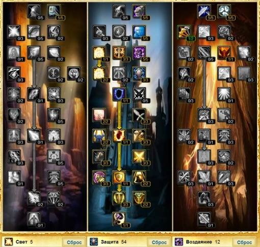

Гайд по Паладину «Защита» (Protection) в PVE WOW Lich King 3.3.5
Сперва давайте разберем почему же всё-таки паладин. Первое — это умение значительно снижать входящий урон. Нормальный протопал снижает получаемый урон на 15% +6% дополнительно магического урона. Второе — аггрогенерация. При хорошем шмоте, другим танкам становится тяжело тягаться с нами в наборе аггро, а о наших значениях АоЕ аггро остальные классы могут лишь мечтать. Поскольку солидная часть урона по танку приходится на удары в ближнем бою, наличие в наших руках щита существенно облегчает жизнь хилам. А возможность перманентно держать на себе заклинание, дающее +30% к шансу блока даем нам преимущество в сравнении с воинами. Тяжело переоценить роль протопала в рейде, ведь мы являемся самой мощьной бафмашиной) А наличие сейвабилок и хорошей реакции неоднократно спасет от неминуемого вайпа, либо длительного и нудного корпсрана. Ну и самое вкусное, за счёт возможности лечить себя заклинаниями и пассивными эффектами, протопал становится вторым, после дк, лучшим соло классом в World of Warcraft.
Из минусов — невозможность носить луки, огнестрелы и метательное оружие, что ограничивает наши возможности достать противника на дистанции и не позволяет получить дополнительные бонусы от статов на оружии такого типа.
Начнем с талантов. Для прото паладина качается вторая ветка — ветка защиты.

2. Характеристики
1.Сила — основной параметр. Влияет на количество наносимого урона и количество блокируемого физдамага щитом. За счёт талантов также дает прирост в размере 60% от количества силы к спд. Штука полезная, тем не менее наращивать её за счёт сокетов/чантов не рекомендую, т.к. их можно использовать в более полезных целях, а полученой со шмота силы нам вполне хватит.
2.Выносливость — основной параметр. Определяет количество жизней, а следовательно то, как долго мы будем жить. Максить стоит, но без фанатизма.
3.Броня — основной параметр. Уменьшает количество физического урона, наносимого по нам. Очень важная характеристика, которую я опять же не рекомендовал бы максить, так как вместо неё можно поставить более значимые бонусы. Вполне хватит той брони, что мы получаем от латного шмота и ауры. Кап брони 70 — 75%.
4.Рейтинг меткость — для нас танков это непозволительная роскошь промахиваться по мобам и терять агр, так что хардкап хита для сетапа 1ручное оружие+щит составляет 263 хит рейтинга, или 8%.
5.Мастерство — 25 = 6.5%, важный кап ибо босс не сможет уклониться от наших агро абилок.
6.Защита — важная характеристика, нужный нам кап что бы босс по нам не мог критануть 540.
7.Уклонение — отображает шанс избежать физического урона от атаки. 45,25 рейтинга дают 1% уклонения. Хардкап недостижим.
8.Парирование — отображает шанс избежать физического урона от атаки. После парирования следующий удар наносится на 40% быстрее. 45,25 рейтинга дают 1% парирования. Хардкап недостижим.
9.Блок — отображает шанс блокировать атаку, тем самым уменьшив полученый урон на значение block value, которое приобретается с гира и скалируется от количества силы. Хардкапа не имеет, но есть нюансы, о которых будет сказано позже.
В основном же вашей задачей будет наращивание таких характеристик, как уклонение, парирование и выносливость. К сожелению, блок и block value бывают только на низкоуровневых предметах, так что его повышение возможно только через рейтинг защиты.
3. Способности и заклинания
В данном разделе я расскажу вам, какие абилки необходимо постоянно держать под рукой.
В первую очередь вам понадобятся таунты: Праведная защита и Длань возмездия. Здесь будьте предельно внимательны, ведь первый таунт используется на союзника. В противном случае вы сагрите только цель заклинания. Необходимо помнить, что эти таунты являются магией, а не физическими абилками. Соответственно для них кап хита будет составлять 17%. Если вы не имеете такого желания, чтобы оба таунта, однажды в подземелье, дали промах по боссу, вызвав очередной вайп, то обязательно используйте Символ праведной защиты. Эффекты таунта имеют возможность подвергаться димишингу, поэтому можно без зазрения совести ругать ДД, которые постоянно срывают аггро, атакуя не цель прото-паладина.
Святая клятва является основной способностью, которая регенерирует ману. Она за счёт ваших талантов может висеть весь бой и за счёт символа уменьшит на 3% входящий урон. Вы всегда должны вешать её перед пулом. Если у вас есть 4 шмотки Т10, то когда вы используете клятву, будет увеличиваться ваш додж на 12%, что является очень хорошим бонусом.
Священный щит также необходимо вешать перед боем и стараться всегда обновлять, так как это значительно уменьшает входящий урон.
Божественная защита даёт главное преимущество прото-паладину перед другими танками в бою с одной целью. В зависимости от того, какой босс, используйте заклинания по КД или в момент бурста дамага и вас полюбят, многие хилы, в рейде.
Божественный щит наш всеми известный бабл. Использовать необходимо с большой осторожностью, так как при использовании возникает иммунитет к любому урону, и есть вероятность, что ваш уровень угрозы просто обнулится и довольный босс со всех ног мчится пинать дд. В этом деле есть некоторая хитрость: такие боссы как Торавон Страж льда всегда бросают на танков, во время боя, некоторые болезненные доты, поэтому многие в подземельях используют 2 танка. Но если вспомнить, что бабл снимет не только доты, но и все негативные эффекты, то можно, использовав бабл, быстро его сбросить и в босса кинуть таунт. Все стаки и наложенные доты слетят и, прото-паладин, может спокойно продолжать дальше танковать.
Печать повиновения, Печать порчи – они единственные печати, которые паладины используют в подземельях. Первую используем при треше мобов, что позволит их удержать, даже если дд буду бить не вашу цель. Вторую включаем в бою с боссом, это не позволит сорваться аггро.
Длань спасения. Данное заклинание позволит уменьшить пыл одного из дд, который генерирует большой крит и постоянно срывает на себя аггро. Используется только на боссах и как можно позже, так как чем позже вы будете использовать, тем больше данное заклинание съесть крита.
Праведное неистовство – должно быть всегда на прото-паладине. Без него танк просто не сможет генерировать необходимое количество угрозы. Так же данный талант уменьшает входящий урон.
Божественное вмешательство – одно из заклинаний, которое игнорируют многие прото-паладины. Но на самом деле зря. Ведь когда вы видите, что вайп просто неизбежен, то можно бросить иммунитет на одного из хилов, который после вайпа быстро реснет весь рейд. А так же в тот момент, когда мы жертвуем собой, шмот не изнашивается, что экономит хорошие деньги при ремонте.
Молот правосудия должен быть всегда под рукой, так как данное заклинание поможет сбить каст, тем самым мешая противнику восстановить хп.
Возложение рук. Данным заклинанием лучше спасти во время боя одного из дд, чем использовать его на себя, так как 2 минуты использование имеющихся щитов просто станет невозможно, а это ведь не очень хорошо.
4. Ротация
Щит небес — урона сам по себе не наносит, зато если держать всё время активным, дает постоянный бонус к шансу блокировать удар в 30%
Правосудие света либо Правосудие мудрости — За счёт талантов уменьшает скорость атаки противника и имеет кд 9 сек. Именно поэтому нет смысла тратить дополнительное очко в талант Беспристрастное правосудие, т.к. Вы всё-равно не сможете использовать правосудие повторно раньше, чем через 9 секунд. Если же не потратить ниодного очка в этот талант, ротация не будет работать. Я рекомендую в инстах использовать правосудие мудрости, поскольку нас и так будет кому хилить.
Освящение — благодаря тому, что наносит урот светлой магией, генерирует достаточно много трита. Ни в коем случае нельзя использовать Символ освящения — суть и польза ротации будут нарушены.
Молот праведника и Щит праведности — дают хороший прирост трита за счёт урона светлой магией
5. Символы
Символ святой клятвы — когда паладин использует способность «Святая клятва», то с помощью этого символа можно отразить 3% от всего урона.
Символ печати отмщения — как я уже говорил, этот символ повышает рейтинг мастерства
Символ праведной защиты.
Обязательный малый символ — Символ чутья на нежить. Этот символ даст +1% к урону по нежити, а это просто отличный бонус для похода в ЦЛК, да и вообще, в сражении против Артаса на вашем пути попадаются в основном только нежити.
6. Чары
Голова — Магический знак стойкого защитника.
Плечи — Великое начертание вершины
Плащ — Чары для плаща уклонение II
Грудь — Свиток чар для нагрудника — здоровье IX
Наручи — Формула чар для наручей — выносливость VI
Пояс — Извечная поясная пряжка.
Руки — Свиток чар для перчаток — оружейник
Чар для обуви — Свиток чар для обуви — стойкость II
Чары для щита – Чары для щита — выносливость V
Оружие — Свиток чар для оружия — мангуст
7. Камни
Мета — Алмаз строгого землеправителя.
Синие — Цельный величественный циркон
Желтые — Отверделое Око Зула
Красные — Изменчивый страхолит или Монарший страхолит. Тут нужно смотреть чего вам не хватает.
8. Bis лист
Голова — Освященный большой шлем клятвы Свету
Плечи — Освященные наплечные щитки клятвы Свету
Грудь — Освященный нагрудный доспех клятвы Свету
Ноги — Освященные набедренники клятвы Свету
Руки — Освященные боевые рукавицы клятвы Свету
Шея — Малахитовая петля
Плащ — Королевский багровый плащ
Наручи — Наручи темной расплаты
Пояс — Пояс переломанных костей
Ступни — Ботфорты надвигающегося воскрешения
Кольца — Пепельное кольцо безграничной отваги и Кольцо владыки мира
Оружие — Митриос, наследие Бронзоборода и Последнее желание — на выбор.
Щит — Мерзлая стена ледяной цитадели
Дополнительно:
В Цлк: Безупречный клык Синдрагосы, Жизненная сила владыки мира — С гера, Неизвестный орган
Для других инстов и рейдов: Один из этих Безупречный клык Синдрагосы,, Жизненная сила владыки мира — С гера, Неизвестный орган + Монета на удачу
Тут уж какие вам капы нужны, в цлк монета не очень из-за того что дебаф на -20% уклонения, а в других инстах очень не плохо.
9. Бонусы от профессий
Инженерка — Укрепленный решетчатый каркас +885 к броне
Кожевка дает нам отличную чарку на наручи +102 к выносливости — Меховая подкладка — выносливость.
Горное дело — пассивный бонус, который растет с уровнем профессии +60 к выносливости.
10. Еда и Химия
Химия:
Для того чтобы поднять меткость кушаем Луциана особого приготовления, или Карпаччо из ворга.
Если вы используете ловкость как основной стат уклонения, то вам подойдёт Копчёная рыба-ангел.
Если вам необходимо поднять мастерство, то кушаем Люторожий змеестейк.
Еда:
Из питья используем: Настой каменной крови, или Зелье несокрушимости.
12. Макросы для Прото Паладина
Для Прото Паладина достаточно полезен. Бывает, что босс способен накладывать свои эффекты, которые будут негативно влиять на ваше аггро.
Code
#showtooltip Щит небес
/cast Щит небес
/cancelaura Длань спасения
/cancelaura Длань защиты
/cancelaura Божественный щит
С помощью данного макроса вы без усилий будете все с себя снимать. Достаточно удобно использовать в моменты танкования.